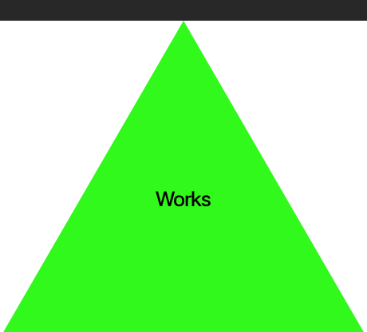

오호는 안동에서 태어나 양산(Sun,Mountain)에서 자랐고,
현재는 서울을 기반으로 활동하는 디자이너입니다.
BI, 에디토리얼, 그래픽, 일러스트레이션 등 보여지는 것을 만드는 일1과
그것들이 실제로 작동하는 방식2을 고민하고 제안합니다.
Oho was born in Andong and raised in Yangsan,
is currently a Seoul-based designer.
He works across BI, editorial design, graphics, and illustration—creating what is seen1 and considering and proposing how those things actually function2.
SKILLSET
- 01 Branding
- 02 Graphic Design
- 03 Illustration
- 04 Editorial Design
- 05 Photography
SOFTWARES
- ADOBE PHOTOSHOP
- ADOBE INDESIGN
- ADOBE ILLUSTRATOR
- ADOBE AFTER EFFECTS
- ADOBE PREMIERE PRO
- PROCREATE
- FRAMER
- FIGMA
LANGUAGE
- 일본어
